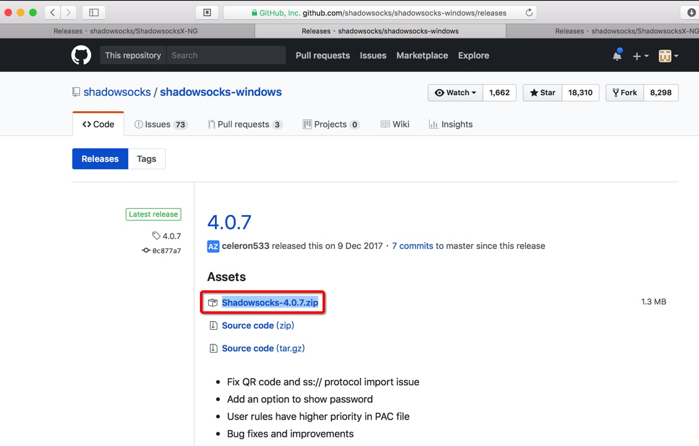

Windows中的Shadowsocks客户端
Windows版ss客户端：Shadowsocks.exe
下载和安装Shadowsocks.exe
Winddows中的ss客户端，有多种，常用的是：
去github官网 :
Releases · shadowsocks/shadowsocks-windows · GitHub
点击下载最新的Windows的客户端：

解压缩下载得到的zip文件后，即可得到exe可执行文件，无需额外安装，双击即可打开使用。
使用Win版Shadowsocks.exe实现科学上网
Win版Shadowsocks的功能，其实和后面要介绍的Mac版ss客户端：ShadowsocksX-NG的用法，基本上是一样的。所以可以具体用法可以参考后面的ShadowsocksX-NG。